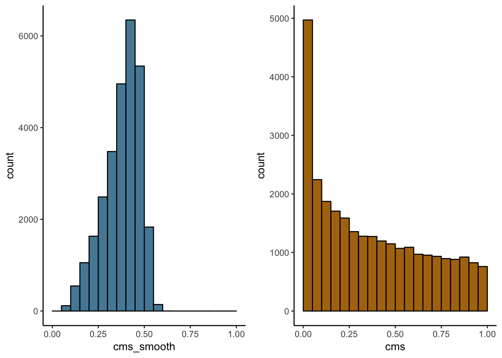
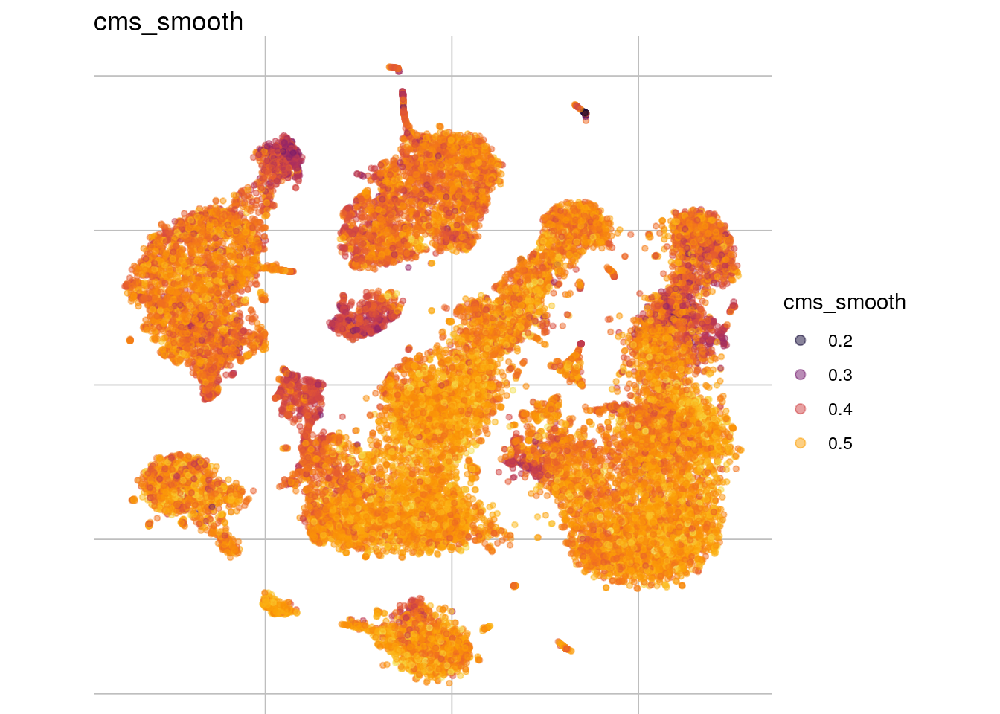
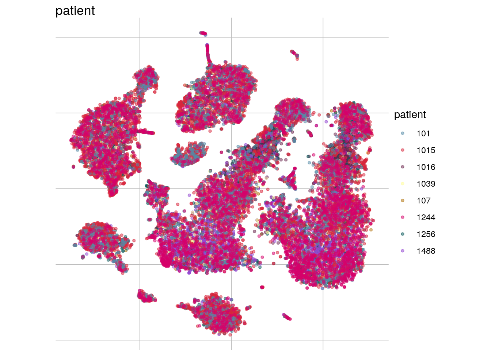

khang_patient
almulue
2019-06-06
Last updated: 2019-07-10
Checks: 5 1
Knit directory: characterize_batches/
This reproducible R Markdown analysis was created with workflowr (version 1.3.0). The Checks tab describes the reproducibility checks that were applied when the results were created. The Past versions tab lists the development history.
The R Markdown file has unstaged changes. To know which version of the R Markdown file created these results, you’ll want to first commit it to the Git repo. If you’re still working on the analysis, you can ignore this warning. When you’re finished, you can run wflow_publish to commit the R Markdown file and build the HTML.
Great job! The global environment was empty. Objects defined in the global environment can affect the analysis in your R Markdown file in unknown ways. For reproduciblity it’s best to always run the code in an empty environment.
The command set.seed(20190528) was run prior to running the code in the R Markdown file. Setting a seed ensures that any results that rely on randomness, e.g. subsampling or permutations, are reproducible.
Great job! Recording the operating system, R version, and package versions is critical for reproducibility.
Nice! There were no cached chunks for this analysis, so you can be confident that you successfully produced the results during this run.
Great! You are using Git for version control. Tracking code development and connecting the code version to the results is critical for reproducibility. The version displayed above was the version of the Git repository at the time these results were generated.
Note that you need to be careful to ensure that all relevant files for the analysis have been committed to Git prior to generating the results (you can use wflow_publish or wflow_git_commit). workflowr only checks the R Markdown file, but you know if there are other scripts or data files that it depends on. Below is the status of the Git repository when the results were generated:
Ignored files:
Ignored: .Rhistory
Ignored: .Rproj.user/
Ignored: analysis/figure/
Untracked files:
Untracked: code/diagnostic_plots.R
Untracked: data/PBMC_media_merged_clusters_seurat.rds
Untracked: data/csf_media.rds
Untracked: data/pancreas.rds
Untracked: data/pbmc2_media.rds
Untracked: data/pbmc_media.rds
Untracked: data/sce_csf_Integrated.rds
Untracked: data/sce_hca_integrated.rds
Untracked: data/sce_khang_patient.rds
Untracked: data/sce_pbmc_Integrated.rds
Untracked: deg_hca.rds
Untracked: iscb_v2.pdf
Untracked: limma_hca.rds
Untracked: output/cms_4_mouse_red.rds
Untracked: output/cms_all_mouse_red.rds
Untracked: output/cms_cellBench.rds
Untracked: output/cms_csf_media_storage.rds
Untracked: output/cms_csf_patient.rds
Untracked: output/cms_khang_patient.rds
Untracked: output/cms_pancreas.rds
Untracked: output/cms_pbmc2_media_storage.rds
Untracked: output/cms_pbmc2_patient.rds
Untracked: output/cms_pbmc_media_storage.rds
Untracked: output/d_exp_cellBench.rds
Untracked: output/d_exp_csf_media_storage.rds
Untracked: output/d_exp_csf_patient.rds
Untracked: output/d_exp_ctcellBench.rds
Untracked: output/d_exp_ctcsf_media_storage.rds
Untracked: output/d_exp_ctcsf_patient.rds
Untracked: output/d_exp_cthca.rds
Untracked: output/d_exp_ctkhang_patient.rds
Untracked: output/d_exp_ctpancreas.rds
Untracked: output/d_exp_ctpbmc2_media_storage.rds
Untracked: output/d_exp_ctpbmc2_patient.rds
Untracked: output/d_exp_ctpbmc_media_storage.rds
Untracked: output/d_exp_hca.rds
Untracked: output/d_exp_khang_patient.rds
Untracked: output/d_exp_pancreas.rds
Untracked: output/d_exp_pbmc2_media_storage.rds
Untracked: output/d_exp_pbmc2_patient.rds
Untracked: output/d_exp_pbmc_media_storage.rds
Untracked: output/deg_cellBench.rds
Untracked: output/deg_csf_media_storage.rds
Untracked: output/deg_csf_patient.rds
Untracked: output/deg_hca.rds
Untracked: output/deg_khang_patient.rds
Untracked: output/deg_pancreas.rds
Untracked: output/deg_pbmc2_media_storage.rds
Untracked: output/deg_pbmc2_patient.rds
Untracked: output/deg_pbmc_media_storage.rds
Untracked: output/integrated_protocols_mouse_red.rds
Untracked: output/limma_cellBench.rds
Untracked: output/limma_csf_media_storage.rds
Untracked: output/limma_csf_patient.rds
Untracked: output/limma_hca.rds
Untracked: output/limma_khang_patient.rds
Untracked: output/limma_pancreas.rds
Untracked: output/limma_pbmc2_media_storage.rds
Untracked: output/limma_pbmc2_patient.rds
Untracked: output/limma_pbmc_media_storage.rds
Untracked: output/lrt_ct_csf_media_storage.rds
Untracked: output/lrt_ct_csf_patient.rds
Untracked: output/pbmc_media_cms.rds
Untracked: output/pbmc_media_limma_results.RData
Untracked: output/pbmc_media_upset_data.RData
Untracked: output/protocol_processed_sce_list_red.rds
Untracked: output/seurat_pbmc_Integrated.rds
Untracked: output/summary_cellBench.rds
Untracked: output/summary_csf_media_storage.rds
Untracked: output/summary_csf_patient.rds
Untracked: output/summary_hca.rds
Untracked: output/summary_khang_patient.rds
Untracked: output/summary_pancreas.rds
Untracked: output/summary_pbmc2_media_storage.rds
Untracked: output/summary_pbmc2_patient.rds
Untracked: output/summary_pbmc_media.rds
Untracked: output/summary_pbmc_media_storage.rds
Untracked: output/upset_cellBench.rds
Untracked: output/upset_csf_media_storage.rds
Untracked: output/upset_csf_patient.rds
Untracked: output/upset_hca.rds
Untracked: output/upset_khang_patient.rds
Untracked: output/upset_pancreas.rds
Untracked: output/upset_pbmc2_media_storage.rds
Untracked: output/upset_pbmc2_patient.rds
Untracked: output/upset_pbmc_media_storage.rds
Untracked: output/vp_cellBench.rds
Untracked: output/vp_csf_media_storage.rds
Untracked: output/vp_csf_patient.rds
Untracked: output/vp_hca.rds
Untracked: output/vp_khang_patient.rds
Untracked: output/vp_pancreas.rds
Untracked: output/vp_pbmc.rds
Untracked: output/vp_pbmc2_media_storage.rds
Untracked: output/vp_pbmc2_patient.rds
Untracked: output/vp_pbmc_media_storage.rds
Unstaged changes:
Modified: analysis/cell_bench.Rmd
Modified: analysis/csf_media.Rmd
Modified: analysis/csf_patient.Rmd
Modified: analysis/hca.Rmd
Modified: analysis/khan.Rmd
Modified: analysis/pancreas.Rmd
Modified: analysis/pbmc2_media.Rmd
Modified: analysis/pbmc2_patient.Rmd
Modified: analysis/pbmc_media_storage.Rmd
Note that any generated files, e.g. HTML, png, CSS, etc., are not included in this status report because it is ok for generated content to have uncommitted changes.
These are the previous versions of the R Markdown and HTML files. If you’ve configured a remote Git repository (see ?wflow_git_remote), click on the hyperlinks in the table below to view them.
| File | Version | Author | Date | Message |
|---|---|---|---|---|
| html | c303fb7 | almutlue | 2019-07-03 | Build site. |
| Rmd | f7d5ec3 | almutlue | 2019-06-28 | minor add for cellbench |
| Rmd | 8ab0e82 | zjanna | 2019-06-27 | add new codes |
| Rmd | 3c4c8fa | almutlue | 2019-06-27 | add ternary plots |
| Rmd | 00723e9 | zjanna | 2019-06-27 | uncomment pierre part |
| Rmd | 30b0e7c | zjanna | 2019-06-27 | paths |
| Rmd | acb824b | almutlue | 2019-06-27 | update files |
| html | acb824b | almutlue | 2019-06-27 | update files |
| html | 887b9be | almutlue | 2019-06-20 | Build site. |
| html | f8e6fa1 | almutlue | 2019-06-20 | Build site. |
| html | 41eef70 | zjanna | 2019-06-19 | Build site. |
| Rmd | 0650f8b | zjanna | 2019-06-19 | wflow_publish(“analysis/khan.Rmd”) |
Media batch effects
Khang data, test batch effect from different patient. Droplet-based scRNA-seq PBMC data from 8 Lupus patients before and after 6h-treatment with INF-beta. Represented as a SingleCellExperiment; derived from GEO accession number GSE96583.
suppressPackageStartupMessages({
library(ExperimentHub)
library(scater)
library(jcolors)
library(CellMixS)
library(gridExtra)
library(purrr)
library(here)
library(tidyr)
library(dplyr)
library(stringr)
library(variancePartition)
library(diffcyt)
library(ComplexHeatmap)
library(magrittr)
library(ggtern)
library(TruncatedDistributions)
library(scran)
})# data
data_path <- here::here("data")
out_path <- here::here("output")
code_path <- here::here("code")
dataset_name <- "khang_patient"
# loading the data
sce <- readRDS(paste0(data_path, "/sce_khang_patient.rds"))
# sce <- runUMAP(sce)
sce$patient <- as.factor(as.character(colData(sce)[,'ind']))
cols <-c(c(jcolors('pal6'),jcolors('pal8'))[c(1,8,14,5,2:4,6,7,9:13,15:20)],jcolors('pal4'))
names(cols) <- c()
#param
MultiSample = FALSE
#variables
batch <- "patient"
celltype <- "cell"
sample <- NA
table(colData(sce)[,batch])
101 1015 1016 1039 107 1244 1256 1488
2246 5617 4095 1129 1221 3881 4575 5167 #contrast
cont <- list("1015-1016" = c(0,1,-1,0,0,0,0,0,0),
"1015-1244" = c(0,1,0,0,0,-1,0,0,0),
"1015-1256" = c(0,1,0,0,0,0,-1,0,0),
"1015-1488" = c(0,1,0,0,0,0,0,-1,0),
"1016-1244" = c(0,0,1,0,0,-1,0,0,0),
"1016-1256" = c(0,0,1,0,0,0,-1,0,0),
"1244-1256" = c(0,0,0,0,0,1,-1,0,0),
"1244-1488" = c(0,0,0,0,0,1,0,-1,0),
"1256-1488" = c(0,0,0,0,0,0,1,-1,0))Visualize batch effect
feature_list <- c(batch, celltype)
lapply(feature_list, function(feature_name){
visGroup(sce, feature_name, dim_red= "UMAP")
})[[1]]
[[2]]
Size /Strength of the batch effcet
How much of the variance within data can be attributed to the batch effect?
VariancePartitioning
expr <- as.matrix(assays(sce)$logcounts)
meta_sub <- as.data.frame(colData(sce)[, c(celltype, batch)])
form <- as.formula(paste0("~ (1|", celltype, ") + (1|", batch, ")"))
# varPart <- fitExtractVarPartModel(expr, form, meta_sub)
#Sort variables (i.e. columns) by median fraction# of variance explained
# vp <- varPart
# saveRDS(vp, paste0(out_path,"/vp_", dataset_name, ".rds"))
vp <- readRDS(paste0(out_path,"/vp_", dataset_name, ".rds"))
vp_names <- rownames(vp)
vp <-vp %>% dplyr::mutate(gene= vp_names) %>% dplyr::arrange(-!! rlang::parse_expr(batch))Warning in class(x) <- c(subclass, tibble_class): Setze class(x) auf
mehrere Zeichenketten("tbl_df", "tbl", ...); das Ergebnis ist kein S4
Objekt mehrvp_sub <- vp[1:3] %>% set_rownames(vp$gene)
#plot
plotPercentBars( vp_sub[1:10,] )
plotVarPart( vp_sub )
Deviance explaine by Piere Luc
getDevianceExplained <- function(sce, form.full=~lsize+phenoid, form.null=~lsize, tagwise=TRUE){
library(edgeR)
if(is.null(sizeFactors(sce))) sce <- scran::computeSumFactors(sce)
dds <- DGEList(as.matrix(counts(sce)))
dds$samples$lib.size <- 1
CD <- as.data.frame(colData(sce))
CD$lsize <- log(sizeFactors(sce))
mm <- model.matrix(form.full, data=CD)
mm0 <- model.matrix(form.null, data=CD)
dds <- estimateDisp(dds, mm, tagwise=tagwise)
fit <- glmFit(dds, mm)
fit0 <- glmFit(dds, mm0)
de <- (deviance(fit0)-deviance(fit))/deviance(fit0)
de[which(de<0)] <- 0
return( de )
}
form.full <- as.formula(paste0("~ lsize + ", batch))
form.null <- as.formula(paste0("~ lsize"))
#d_exp <- getDevianceExplained(sce, form.full = form.full, form.null = form.null)
form.full_ct <- as.formula(paste0("~ lsize + ", celltype))
#d_exp_ct <- getDevianceExplained(sce, form.full = form.full_ct, form.null = form.null)
#saveRDS(d_exp, paste0(out_path,"/d_exp_", dataset_name, ".rds"))
#saveRDS(d_exp_ct, paste0(out_path,"/d_exp_ct", dataset_name, ".rds"))Summarize variance partitioning
d_exp <- readRDS(paste0(out_path,"/d_exp_", dataset_name, ".rds"))
d_exp_ct <- readRDS(paste0(out_path,"/d_exp_ct", dataset_name, ".rds"))
#How many genes have a variance component affected by the batch variable with more than 1%
n_batch_gene <- (as_tibble(vp) %>% dplyr::filter(!! rlang::parse_expr(batch) > 0.01) %>% nrow())/dim(sce)[1]
n_batch_gene10 <- (as_tibble(vp) %>% dplyr::filter(!! rlang::parse_expr(batch) > 0.1) %>% nrow())/dim(sce)[1]
n_celltype_gene <- (as_tibble(vp) %>% dplyr::filter(!! rlang::parse_expr(celltype)> 0.01) %>% nrow())/dim(sce)[1]
n_rel <- n_batch_gene/n_celltype_gene
#Deviance modeled
n_batch_gene_mod <- length(which(d_exp > 0.01))/dim(sce)[1]
n_batch_gene10_mod <- length(which(d_exp > 0.1))/dim(sce)[1]
n_celltype_gene_mod <- length(which(d_exp_ct > 0.01))/dim(sce)[1]
n_rel_mod <- n_batch_gene_mod/n_celltype_gene_mod
#The mean percentage of the variance that is explained by the batch effect independent from the celltype
m_batch <- mean(asin(vp[, batch]))
m_celltype <- mean(asin(vp[, celltype]))
m_rel <- m_batch/m_celltype
m_batch_mod <- mean(asin(d_exp))
m_celltype_mod <- mean(asin(d_exp_ct))
m_rel_mod <- m_batch_mod/m_celltype_mod
#The median percentage of the variance that is explained by the batch effect independent from the celltype
me_batch <- median(asin(vp[, batch]))
me_celltype <- median(asin(vp[, celltype]))
me_rel <- me_batch/me_celltype
me_batch_mod <- median(asin(d_exp))
me_celltype_mod <- median(asin(d_exp_ct))
me_rel_mod <- me_batch_mod/me_celltype_modPlot varinace/deviance expression
#plot varinace dev-along with expression
rownames(vp) <- vp$gene
vp <- vp[rownames(sce),]
rowData(sce)$vp_batch <- vp[,batch]
rowData(sce)$vp_ct <- vp[,celltype]
rowData(sce)$vp_other <- vp[,"Residuals"]
rowData(sce)$d_exp <- d_exp
rowData(sce)$d_exp_ct <- d_exp_ct
rowData(sce)$d_exp_other <- 1 - d_exp - d_exp_ct
rowData(sce)$mean_expr <- rowMeans(assays(sce)$logcounts)
#add expr classes
th <- quantile(rowMeans(assays(sce)$logcounts), c(.33, .66))
high_th <- th[2]
mid_th <- th[1]
rowData(sce)$expr_class <- ifelse(rowMeans(assays(sce)$logcounts) > high_th, "high", ifelse(rowMeans(assays(sce)$logcounts) <= high_th & rowMeans(assays(sce)$logcounts) > mid_th, "medium", "low"))
ggplot(as.data.frame(rowData(sce)), aes(x = mean_expr, y = vp_batch, colour = d_exp)) +
geom_point() +
geom_smooth(method = "lm", se = FALSE)
| Version | Author | Date |
|---|---|---|
| c303fb7 | almutlue | 2019-07-03 |
ggplot(as.data.frame(rowData(sce)), aes(x = mean_expr, y = d_exp, colour = vp_batch)) +
geom_point() +
geom_smooth(method = "lm", se = FALSE)
| Version | Author | Date |
|---|---|---|
| c303fb7 | almutlue | 2019-07-03 |
ggplot(as.data.frame(rowData(sce)), aes(x = mean_expr, y = vp_ct, colour = d_exp_ct)) +
geom_point() +
geom_smooth(method = "lm", se = FALSE)
| Version | Author | Date |
|---|---|---|
| c303fb7 | almutlue | 2019-07-03 |
ggplot(as.data.frame(rowData(sce)), aes(x = mean_expr, y = d_exp_ct, colour = vp_ct)) +
geom_point() +
geom_smooth(method = "lm", se = FALSE)
| Version | Author | Date |
|---|---|---|
| c303fb7 | almutlue | 2019-07-03 |
Ternary plots
ggtern(data=as.data.frame(rowData(sce)),aes(vp_batch, vp_ct, vp_other)) +
stat_density_tern(aes(fill=..level.., alpha=..level..),geom='polygon') +
scale_fill_gradient2(high = "red") +
guides(color = "none", fill = "none", alpha = "none") +
geom_point(size= 0.1, alpha = 0.5) +
theme_bw()Warning: Removed 842 rows containing non-finite values (StatDensityTern).
| Version | Author | Date |
|---|---|---|
| c303fb7 | almutlue | 2019-07-03 |
ggtern(data=as.data.frame(rowData(sce)),aes(vp_batch, vp_ct, vp_other)) +
geom_point(size = 0.1) +
geom_density_tern() +
theme_bw()Warning: Removed 842 rows containing non-finite values (StatDensityTern).
| Version | Author | Date |
|---|---|---|
| c303fb7 | almutlue | 2019-07-03 |
ggtern(data=as.data.frame(rowData(sce)),aes(vp_batch, vp_ct, vp_other)) +
geom_point(size = 0.1) +
geom_density_tern() +
theme_bw() +
facet_grid(~expr_class)Warning: Removed 85 rows containing non-finite values (StatDensityTern).Warning: Removed 436 rows containing non-finite values (StatDensityTern).Warning: Removed 321 rows containing non-finite values (StatDensityTern).
| Version | Author | Date |
|---|---|---|
| c303fb7 | almutlue | 2019-07-03 |
ggtern(data=as.data.frame(rowData(sce)),aes(d_exp, d_exp_ct, d_exp_other)) +
stat_density_tern(aes(fill=..level.., alpha=..level..),geom='polygon') +
scale_fill_gradient2(high = "red") +
guides(color = "none", fill = "none", alpha = "none") +
geom_point(size= 0.1, alpha = 0.5) +
theme_bw() 
| Version | Author | Date |
|---|---|---|
| c303fb7 | almutlue | 2019-07-03 |
ggtern(data=as.data.frame(rowData(sce)),aes(d_exp, d_exp_ct, d_exp_other)) +
geom_point(size = 0.1) +
geom_density_tern() +
theme_bw() 
| Version | Author | Date |
|---|---|---|
| c303fb7 | almutlue | 2019-07-03 |
ggtern(data=as.data.frame(rowData(sce)),aes(d_exp, d_exp_ct, d_exp_other)) +
geom_point(size = 0.1) +
geom_density_tern() +
theme_bw() +
facet_grid(~expr_class)
| Version | Author | Date |
|---|---|---|
| c303fb7 | almutlue | 2019-07-03 |
Celltype specificity
Celltype abundance
meta_tib <- as_tibble(colData(sce)) %>% group_by_at(c(batch, celltype)) %>% summarize(n = n()) %>% dplyr::mutate(cell_freq = n / sum(n))
plot_abundance <- function(cluster_var, tib, x_var){
meta_df <- as.data.frame(eval(tib))
p <-ggplot(data=meta_df, aes_string(x=x_var, y="cell_freq", fill = cluster_var)) +
geom_bar(stat="identity") + scale_fill_manual(values=cols)
p + coord_flip() + theme_minimal()
}
plot_abundance(cluster_var = celltype, tib = meta_tib, x_var = batch)
Celltype abundance - relative difference in abundances
meta_tib <- as_tibble(colData(sce)) %>% group_by_at(c(batch, celltype)) %>%
summarize(n = n()) %>% spread_(batch,"n")
meta_df <- as.data.frame(eval(meta_tib))[,-1]
meta_comb<-combn(meta_df,2,simplify=FALSE)
res<-lapply(meta_comb,function(x){
cond1<-names(x)[1]
cond2<-names(x)[2]
rel_abund_diff<-mapply(function(cond1,cond2) abs(cond1-cond2)/(cond1+cond2), x[,cond1], x[,cond2])
rel_abund_diff
})
mean_rel_abund_diff<-mean(unlist(res))
min_rel_abund_diff<-min(unlist(res))
max_rel_abund_diff<-max(unlist(res))Test for significant changes in celltype abundances. Diffcyt (skip for datasets without replicates)
if(MultiSample){
#colData
col_tib <- as_tibble(colData(sce)) %>% group_by_at(c(sample, batch)) %>% summarize()
col_dat <- data.frame("sample_id" = col_tib[,sample], "group_id" = col_tib[,batch]) %>% set_rownames(levels(as.factor(colData(sce)[,sample])))
#create desing matrix
design <- createDesignMatrix(
col_dat, cols_design = c(batch)
)
#create contrast
n_contrast <- length(levels(as.factor(colData(sce)[,batch])))
contrast <- diag(n_contrast)
#create summarizedExperiment for cluster abundance (rows = cluster, columns= samples)
cluster_counts <- as_tibble(colData(sce)) %>% group_by_at(c(sample, celltype)) %>% summarize(n=n()) %>% spread_(sample, "n")
cluster_count <- as.matrix(cluster_counts[,-1])
rownames(cluster_count) <- unlist(cluster_counts[, celltype])
#rowData
row_dat <- as_tibble(colData(sce)) %>% group_by_at(celltype) %>% summarize(n=n()) %>% set_colnames(c("cluster_id", "n_cells"))
se <- SummarizedExperiment(list("counts" = cluster_count), rowData= as.data.frame(row_dat), colData= col_dat)
#differential abundance
res_DA <- testDA_edgeR(se, design, contrast)
#summarize - number of differential abundance cluster
n_da_cluster <- length(which(rowData(res_DA)$p_adj < 0.01))
per_da_cluster <- n_da_cluster/length(levels(as.factor(colData(sce)[,celltype])))
}else{
per_da_cluster <- NA
n_da_cluster <-0
}Count distribution
Do the overall counts distribution vary between batches? Clusterwise ploting?
#sample an cluster ids
sids <- levels(as.factor(colData(sce)[, batch]))
names(sids) <- sids
cids <- levels(as.factor(colData(sce)[, celltype]))
names(cids) <- cids
#mean gene expression by sample and cluster
mean_list <- lapply(sids, function(batch_var){
mean_cluster <- lapply(cids, function(cluster_var){
counts_sc <- as.matrix(logcounts(
sce[, colData(sce)[, batch] %in% batch_var & colData(sce)[, celltype] %in% cluster_var]))
})
mean_c <- mean_cluster %>% map(rowMeans) %>% bind_rows %>%
dplyr::mutate(gene=rownames(sce)) %>% gather(cluster, logcounts, levels(as.factor(colData(sce)[,celltype])))
})
mean_expr <- mean_list %>% bind_rows(.id= "sample")
ggplot(mean_expr, aes(x=logcounts, colour=sample)) + geom_density(alpha=.3) +
theme_classic() +
facet_wrap( ~ cluster, ncol = 3) +
scale_colour_manual(values = cols[c(1:8)]) +
scale_x_continuous(limits = c(0, 2))Warning: Removed 6924 rows containing non-finite values (stat_density).
#number of cluster with differnt batch distributions
per_dist <- 5Mean expression batch vs each other
#mean expression
mean_expr <- mean_list %>% bind_rows(.id = "sample" ) %>% spread(sample, logcounts)
mean_expr$cluster<-as.factor(mean_expr$cluster)
batch_all <- levels(as.factor(colData(sce)[,batch]))
lapply(batch_all, function(batch_var){
batch_var_2 <- batch_all[-which(batch_all %in% batch_var)]
lapply(batch_var_2, function(batch_var_3){
ggplot(mean_expr, aes_string(x=batch_var, y=batch_var_3)) +
geom_point(alpha=.3, aes(color=cluster)) +
ggtitle(batch_var) + geom_abline(slope = 1) + coord_fixed() +
facet_wrap( ~ cluster, ncol = 3) +
scale_color_manual(values=cols)
})
})[[1]]
[[1]][[1]]
[[1]][[2]]
[[1]][[3]]
[[1]][[4]]
[[1]][[5]]
[[1]][[6]]
[[1]][[7]]
[[2]]
[[2]][[1]]
[[2]][[2]]
[[2]][[3]]
[[2]][[4]]
[[2]][[5]]
[[2]][[6]]
[[2]][[7]]
[[3]]
[[3]][[1]]
[[3]][[2]]
[[3]][[3]]
[[3]][[4]]
[[3]][[5]]
[[3]][[6]]
[[3]][[7]]
[[4]]
[[4]][[1]]
[[4]][[2]]
[[4]][[3]]
[[4]][[4]]
[[4]][[5]]
[[4]][[6]]
[[4]][[7]]
[[5]]
[[5]][[1]]
[[5]][[2]]
[[5]][[3]]
[[5]][[4]]
[[5]][[5]]
[[5]][[6]]
[[5]][[7]]
[[6]]
[[6]][[1]]
[[6]][[2]]
[[6]][[3]]
[[6]][[4]]
[[6]][[5]]
[[6]][[6]]
[[6]][[7]]
[[7]]
[[7]][[1]]
[[7]][[2]]
[[7]][[3]]
[[7]][[4]]
[[7]][[5]]
[[7]][[6]]
[[7]][[7]]
[[8]]
[[8]][[1]]
[[8]][[2]]
[[8]][[3]]
[[8]][[4]]
[[8]][[5]]
[[8]][[6]]
[[8]][[7]]
Cellspecific mixing score
Calculate cms
sce <- runPCA(sce, ncomponents = 10)
sce <- cms(sce, group = batch, k = 120, cell_min = 10, n_dim = 10, dim_red = "PCA")Warning in (function (jobs, data, centers, info, distance, k, get.index, :
tied distances detected in nearest-neighbor calculationsaveRDS(sce, paste0(out_path, "/cms_", dataset_name, ".rds"))
sce <- readRDS(paste0(out_path, "/cms_", dataset_name, ".rds"))
visHist(sce, n_col = 2)
visMetric(sce, metric_var = "cms_smooth", dim_red = "PCA")
visGroup(sce, batch, dim_red = "PCA")
| Version | Author | Date |
|---|---|---|
| f8e6fa1 | almutlue | 2019-06-20 |
#summarize
mean_cms <- mean(sce$cms)
n_cms_0.01 <- length(which(sce$cms < 0.01))
cluster_mean_cms <- as_tibble(colData(sce)) %>% group_by_at(celltype) %>% summarize(cms_mean = mean(cms))
var_cms <- var(cluster_mean_cms$cms_mean)DE analysis
Calculate DEG
x<-sce
sce$stim<-as.factor(sce$stim)
clust <- as.factor(colData(sce)[,celltype])
# n_cells <- table(clust,colData(sce)[,sample])
kids<-levels(clust)
names(kids) <- kids
group<-as.factor(colData(sce)[,batch])
cs <- names(cont)
names(cs) <- cs
es<- expr
ctype <- "contrast"
res_df <- function(k, tt, ct, c) {
df <- data.frame(
gene = rownames(tt), cluster_id = k, tt,
row.names = NULL, stringsAsFactors = FALSE)
df[[ct]] <- c
return(df)
}
doDE <- function(x,lfc_cutoff=log2(1.1)){
res<-lapply(kids, function (k) {
cat(k, "..", sep = "")
n <- clust==k
es_tmp <- es[,n]
grp <- group[n]
stim<-sce$stim[n]
design <- model.matrix(~0+grp+stim)
k1 <- rowSums(es_tmp > 0) >= .2*min(table(grp))
es_tmp <- es_tmp[k1,]
f <- lmFit(es_tmp, design)
f <- eBayes(f, trend = TRUE)
tt <- lapply(cont, function(c) {
cc<-names(c)
fc <- contrasts.fit(f, contrasts = c)
tr <- treat(fc, lfc=lfc_cutoff)
tt <- topTreat(tr, n=Inf)
res_df(k, tt, ctype,cc)
})
return(list(tt = tt, data = es_tmp))
})
# remove empty clusters
skipped <- vapply(res, is.null, logical(1))
if (any(skipped))
message(paste("Cluster(s)", dQuote(kids[skipped]), "skipped due to an",
"insufficient number of cells in at least 2 samples per group."))
res <- res[!skipped]
kids <- kids[names(res)]
# re-organize by contrast &
# do global p-value adjustment
tt <- lapply(res, "[[", "tt")
tt <- lapply(cs, function(c) map(tt, c))
# return results
data <- lapply(res, "[[", "data")
list(table = tt,
data = data,
design = design,
coef = coef)
}
res<-doDE(x,lfc_cutoff=log2(1.1))B cells..CD14+ Monocytes..CD4 T cells..CD8 T cells..Dendritic cells..FCGR3A+ Monocytes..Megakaryocytes..NK cells..saveRDS(res, file=paste0(out_path, "/limma_", dataset_name, ".rds"))Some diagnostics plot of DEG
Upset plot
res<-readRDS(paste0(out_path, "/limma_", dataset_name, ".rds"))
# count nb. of DE genes by cluster
# vapply(res[[1]][[1]], function(x) sum(x$adj.P.Val < 0.05), numeric(1))
FilterDEGs<-function (degDF=df, filter=c(FDR=5))
{
rownames(degDF)<-degDF$gene
pval <- degDF[, grep("adj.P.Val$", colnames(degDF)), drop = FALSE]
pf <- pval <= filter["FDR"]/100
pf[is.na(pf)] <- FALSE
DEGlistUPorDOWN <- sapply(colnames(pf), function(x) rownames(pf[pf[, x, drop = FALSE], , drop = FALSE]), simplify = FALSE)
}
result<-list()
m2<-list()
for(jj in 1:length(cs)){
result[[jj]]<-sapply(res[[1]][[names(cs)[jj]]], function(x) FilterDEGs(x))
names(result[[jj]])<-kids
m2[[jj]] = make_comb_mat(result[[jj]], mode = "intersect")
}
names(result)<-names(cs)
names(m2)<-names(cs)
# lapply(m2, function(x) UpSet(x))Histograms of p-values
ratio specific cluster of DEG
n_de<-lapply(res[[1]],function(y) vapply(y, function(x) sum(x$adj.P.Val < 0.05), numeric(1)))
n_de_cl <- lapply(res[[1]],function(y) vapply(y, function(x) nrow(x), numeric(1)))
mean_n_de<-lapply(n_de,function(x) mean(x))
mean_mean_n_de<-mean(unlist(mean_n_de))/dim(sce)[1]
min_mean_n_de<-min(unlist(mean_n_de))/dim(sce)[1]
max_mean_n_de<-max(unlist(mean_n_de))/dim(sce)[1]
n_genes_lfc1<-lapply(res[[1]],function(y) vapply(y, function(x) sum(abs(x$logFC) > 1), numeric(1)))
mean_n_genes_lfc1<-mean(unlist(n_genes_lfc1))/dim(sce)[1]
min_n_genes_lfc1<-min(unlist(n_genes_lfc1))/dim(sce)[1]
max_n_genes_lfc1<-max(unlist(n_genes_lfc1))/dim(sce)[1]
de_overlap<-lapply(result,function(x){
result2<-x[table(colData(sce)[,celltype])>dim(expr)[2]*0.1]
de_overlap<-length(Reduce(intersect, result2))
de_overlap
})
mean_de_overlap<-mean(unlist(de_overlap))/dim(sce)[1]
min_de_overlap<-min(unlist(de_overlap))/dim(sce)[1]
max_de_overlap<-max(unlist(de_overlap))/dim(sce)[1]
unique_genes_matrix<-NULL
unique_genes<-NULL
cb<-length(names(result[[1]]))
unique_genes<-lapply(result,function(x){
for(i in 1:cb){
unique_genes[i]<-as.numeric(length(setdiff(unlist(x[i]),unlist(x[-i]))))
}
unique_genes_matrix<-cbind(unique_genes_matrix,unique_genes)
unique_genes_matrix
})
unique_genes<-Reduce('cbind', unique_genes)
colnames(unique_genes)<-names(result)
rownames(unique_genes)<-names(result[[1]])
rel_spec1<-NULL
for(i in 1:dim(unique_genes)[2]){
rel_spec<-unique_genes[,i]/de_overlap[[i]]
rel_spec1<-cbind(rel_spec1,rel_spec)
}
mean_rel_spec=mean(rel_spec1)
min_rel_spec=min(rel_spec1)
max_rel_spec=max(rel_spec1)Distribution of lfc by celltypes
block <- colData(sce)[[batch]]
kids <- colData(sce)[,celltype]
res_ct <- pairwiseTTests(
assays(sce)$logcounts,
clusters = kids, block = block,
direction = "up", lfc = 0)
tbl <- res_ct$statistics %>% map_depth(1, data.frame)
names(tbl) <- names(tbl) <- res_ct$pairs$first
lfc_ct_all <- tbl %>% map(function(x){
lfc <- x$logFC
}) %>% unlist()
mean_lfc_ct <- mean(lfc_ct_all)
min_lfc_ct <- min(lfc_ct_all)
max_lfc_ct <- max(lfc_ct_all)
#Check lfc distribution
lfc_ct_real <- data.frame("lfc" = lfc_ct_all, "type" = rep("real", length(lfc_ct_all)))
signs <- sample(c(-1, 1), length(lfc_ct_all), TRUE, prob = c(0.5, 0.5))
tgam_ct <- rtgamma(nrow(lfc_ct_real), 0.35, 0.5, a=min_lfc_ct, b=max_lfc_ct)*signs
lfc_sim_ct <- data.frame("lfc" = tgam_ct, "type" = rep("sim", nrow(lfc_ct_real)))
lfc_comb <- rbind(lfc_sim_ct, lfc_ct_real)
ggplot(lfc_comb, aes(lfc, colour = type)) + geom_density() 
Simulation parameter
#percentage of batch affected genes
cond <- gsub("-.*", "", names(n_de))
cond <- c(cond, unique(gsub(".*-", "", names(n_de))))
cond <- unique(cond)
de_be_tab <- n_de %>% bind_cols()
de_cl_tab <- n_de_cl %>% bind_cols()
de_be <- cond %>% map(function(x){
de_tab <- de_be_tab[, grep(x, colnames(de_be_tab))]
de_be <- rowMeans(de_tab)
}) %>% bind_cols() %>% set_colnames(cond)
n_cl <- cond %>% map(function(x){
cl_tab <- de_cl_tab[, grep(x, colnames(de_cl_tab))]
de_cl <- rowMeans(cl_tab)
}) %>% bind_cols() %>% set_colnames(cond)
p_be <- de_be/n_cl
mean_p_be <- mean(colMeans(p_be))
min_p_be <- min(colMins(as.matrix(p_be)))
max_p_be <- max(colMaxs(as.matrix(p_be)))
sd_p_be <- mean(colSds(as.matrix(p_be)))
if(is.na(sd_p_be)){ sd_p_be <- 0 }
#### Could also be inferred from the variance explained by the batches
p_be_mod <- n_batch_gene_mod
#logFoldchange
mean_lfc_cl <- lapply(res[[1]],function(y) vapply(y, function(x){
de_genes <- which(x$adj.P.Val < 0.05)
mean_de <- mean(abs(x[, "logFC"]))}
, numeric(1))) %>% bind_cols()
min_lfc_cl <- lapply(res[[1]],function(y) vapply(y, function(x){
de_genes <- which(x$adj.P.Val < 0.05)
min_de <- min(abs(x[, "logFC"]))}
, numeric(1))) %>% bind_cols()
max_lfc_cl <- lapply(res[[1]],function(y) vapply(y, function(x){
de_genes <- which(x$adj.P.Val < 0.05)
max_de <- max(abs(x[, "logFC"]))}
, numeric(1))) %>% bind_cols()
mean_lfc_be <- mean(colMeans(mean_lfc_cl, na.rm = TRUE))
min_lfc_be <- min(colMins(as.matrix(min_lfc_cl), na.rm = TRUE))
max_lfc_be <- max(colMaxs(as.matrix(max_lfc_cl), na.rm = TRUE))
#Check lfc distribution
lfc_dist <- lapply(res[[1]][[1]],function(x){
de_genes <- which(x$adj.P.Val < 0.05)
mean_de <- abs(x[, "logFC"])}) %>% unlist() %>% as.data.frame() %>% set_colnames("test") %>% mutate("type" = rep("real", nrow(.)))
tgam <- rtgamma(nrow(lfc_dist), 6.5*mean_lfc_be, scale=0.18, a=min_lfc_be, b=max_lfc_be)
lfc_sim <- data.frame("test" = tgam, "type" = rep("sim", nrow(lfc_dist)))
lfc_comb <- rbind(lfc_sim, lfc_dist)
ggplot(lfc_comb, aes(test, colour = type)) + geom_density()
#rel_be
var_lfc_cl <- colSds(as.matrix(mean_lfc_cl), na.rm = TRUE)
rel_be <- mean(var_lfc_cl)
#p_ct
n_de_unique <- lapply(result,function(x){
de_genes <- unlist(x) %>% unique() %>% length()
de_genes <- de_genes/length(x)
}) %>% bind_cols()
rel_spec2 <- NULL
for(i in 1:length(de_overlap)){
rel_spec <- de_overlap[[i]]/mean(n_de[[i]][table(colData(sce)[,celltype]) > dim(expr)[2]*0.1])
rel_spec2 <- cbind(rel_spec2,rel_spec)
}
mean_p_ct <- 1 - mean(rel_spec2)
max_p_ct <- 1 - min(rel_spec2)
min_p_ct <- 1 - max(rel_spec2)
sd_p_ct <- sd(rel_spec2)
if(is.na(sd_p_ct)){ sd_p_ct <- 0 }Summarize results
#Size? How much of the variance can be attributed to the batch effect?
size <- data.frame("batch_genes_1per" = n_batch_gene,
"batch_genes_10per" = n_batch_gene10,
"celltype_gene_1per" = n_celltype_gene,
"relative_batch_celltype" = n_rel,
"batch_genes_1per_mod" = n_batch_gene_mod,
"batch_genes_10per_mod" = n_batch_gene10_mod,
"celltype_gene_1per_mod" = n_celltype_gene_mod,
"relative_batch_celltype_mod" = n_rel_mod,
"mean_var_batch" = m_batch,
"mean_var_celltype" = m_celltype,
"median_var_batch" = me_batch,
"median_var_celltype" = me_celltype,
"mean_var_batch_mod" = m_batch_mod,
"mean_var_celltype_mod" = m_celltype_mod,
"median_var_batch_mod" = me_batch_mod,
"median_var_celltype_mod" = me_celltype_mod,
"n_cells_total" = ncol(sce),
"n_genes_total" = nrow(sce))
#Celltype-specificity? How celltype/cluster specific are batch effects? Differences in sample variation between batches?
celltype <- data.frame("DA_celltypes" = per_da_cluster,
"per_count_dist" = per_dist,
"mean_cms" = mean_cms,
'mean_rel_abund_diff' = mean_rel_abund_diff,
'min_rel_abund_diff' = min_rel_abund_diff,
'max_rel_abund_diff' = max_rel_abund_diff,
"celltype_var_cms" = var_cms,
"n_cells_cms_0.01" = n_cms_0.01)
#Gene-specificity? How do they effect genes? Single genes? All genes? Which genes?
gene <- data.frame("mean_mean_n_de_genes" = mean_mean_n_de,
"max_mean_n_de_genes" = max_mean_n_de,
"min_mean_n_de_genes" = min_mean_n_de,
"mean_n_genes_lfc1" = mean_n_genes_lfc1,
"min_n_genes_lfc1" = min_n_genes_lfc1,
"max_n_genes_lfc1" = max_n_genes_lfc1,
"mean_de_overlap" = mean_de_overlap,
"min_de_overlap" = min_de_overlap,
"max_de_overlap" = max_de_overlap,
"mean_rel_cluster_spec"= mean_rel_spec,
"min_rel_cluster_spec"= min_rel_spec,
"max_rel_cluster_spec"= max_rel_spec
)
# Cell-specificity? How cell-specific are batche effects? Are their differences in within celltype variation between batches?
sim <- data.frame("mean_p_be" = mean_p_be,
"max_p_be" = max_p_be,
"min_p_be" = min_p_be,
"sd_p_be" = sd_p_be,
"p_be_mod" = p_be_mod,
"mean_lfc_be" = mean_lfc_be,
"min_lfc_be" = min_lfc_be,
"max_lfc_be" = max_lfc_be,
"mean_lfc_ct" = mean_lfc_ct,
"min_lfc_ct" = min_lfc_ct,
"max_lfc_ct" = max_lfc_ct,
"mean_rel_be" = rel_be,
"mean_p_ct"= mean_p_ct,
"min_p_ct"= min_p_ct,
"max_p_ct"= max_p_ct,
"sd_p_ct" = sd_p_ct)
summary <- cbind(size, celltype, gene, sim) %>% set_rownames(dataset_name)
saveRDS(summary, paste0(out_path, "/summary_", dataset_name, ".rds"))
sessionInfo()R version 3.6.0 (2019-04-26)
Platform: x86_64-pc-linux-gnu (64-bit)
Running under: Ubuntu 18.04.2 LTS
Matrix products: default
BLAS: /usr/lib/x86_64-linux-gnu/blas/libblas.so.3.7.1
LAPACK: /usr/lib/x86_64-linux-gnu/lapack/liblapack.so.3.7.1
locale:
[1] LC_CTYPE=de_DE.UTF-8 LC_NUMERIC=C
[3] LC_TIME=de_DE.UTF-8 LC_COLLATE=de_DE.UTF-8
[5] LC_MONETARY=de_DE.UTF-8 LC_MESSAGES=de_DE.UTF-8
[7] LC_PAPER=de_DE.UTF-8 LC_NAME=C
[9] LC_ADDRESS=C LC_TELEPHONE=C
[11] LC_MEASUREMENT=de_DE.UTF-8 LC_IDENTIFICATION=C
attached base packages:
[1] grid stats4 parallel stats graphics grDevices utils
[8] datasets methods base
other attached packages:
[1] scran_1.12.1 TruncatedDistributions_1.0
[3] ggtern_3.1.0 magrittr_1.5
[5] ComplexHeatmap_2.1.0 diffcyt_1.4.3
[7] variancePartition_1.14.0 scales_1.0.0
[9] foreach_1.4.4 limma_3.40.2
[11] stringr_1.4.0 dplyr_0.8.1
[13] tidyr_0.8.3 here_0.1
[15] purrr_0.3.2 gridExtra_2.3
[17] CellMixS_1.1.0 kSamples_1.2-9
[19] SuppDists_1.1-9.4 jcolors_0.0.4
[21] scater_1.12.2 ggplot2_3.1.1
[23] SingleCellExperiment_1.6.0 SummarizedExperiment_1.14.0
[25] DelayedArray_0.10.0 BiocParallel_1.18.0
[27] matrixStats_0.54.0 Biobase_2.44.0
[29] GenomicRanges_1.36.0 GenomeInfoDb_1.20.0
[31] IRanges_2.18.1 S4Vectors_0.22.0
[33] ExperimentHub_1.10.0 AnnotationHub_2.16.0
[35] BiocFileCache_1.8.0 dbplyr_1.4.0
[37] BiocGenerics_0.30.0
loaded via a namespace (and not attached):
[1] proto_1.0.0 tidyselect_0.2.5
[3] lme4_1.1-21 RSQLite_2.1.1
[5] AnnotationDbi_1.46.0 flowCore_1.50.0
[7] munsell_0.5.0 codetools_0.2-16
[9] statmod_1.4.32 withr_2.1.2
[11] colorspace_1.4-1 energy_1.7-5
[13] knitr_1.23 robustbase_0.93-5
[15] bayesm_3.1-1 labeling_0.3
[17] git2r_0.25.2 GenomeInfoDbData_1.2.1
[19] bit64_0.9-7 rprojroot_1.3-2
[21] TH.data_1.0-10 xfun_0.7
[23] R6_2.4.0 doParallel_1.0.14
[25] ggbeeswarm_0.6.0 clue_0.3-57
[27] rsvd_1.0.1 locfit_1.5-9.1
[29] bitops_1.0-6 assertthat_0.2.1
[31] promises_1.0.1 multcomp_1.4-10
[33] beeswarm_0.2.3 gtable_0.3.0
[35] sandwich_2.5-1 workflowr_1.3.0
[37] rlang_0.3.4 GlobalOptions_0.1.0
[39] splines_3.6.0 lazyeval_0.2.2
[41] BiocManager_1.30.4 yaml_2.2.0
[43] reshape2_1.4.3 backports_1.1.4
[45] httpuv_1.5.1 tensorA_0.36.1
[47] tools_3.6.0 gplots_3.0.1.1
[49] RColorBrewer_1.1-2 dynamicTreeCut_1.63-1
[51] ggridges_0.5.1 latex2exp_0.4.0
[53] Rcpp_1.0.1 plyr_1.8.4
[55] progress_1.2.2 zlibbioc_1.30.0
[57] RCurl_1.95-4.12 FlowSOM_1.16.0
[59] prettyunits_1.0.2 GetoptLong_0.1.7
[61] viridis_0.5.1 cowplot_0.9.4
[63] zoo_1.8-6 cluster_2.1.0
[65] colorRamps_2.3 fs_1.3.1
[67] circlize_0.4.6 mvtnorm_1.0-11
[69] whisker_0.3-2 hms_0.4.2
[71] mime_0.7 evaluate_0.14
[73] xtable_1.8-4 pbkrtest_0.4-7
[75] XML_3.98-1.19 shape_1.4.4
[77] compiler_3.6.0 tibble_2.1.2
[79] KernSmooth_2.23-15 crayon_1.3.4
[81] minqa_1.2.4 htmltools_0.3.6
[83] corpcor_1.6.9 pcaPP_1.9-73
[85] later_0.8.0 rrcov_1.4-7
[87] DBI_1.0.0 MASS_7.3-51.4
[89] rappdirs_0.3.1 boot_1.3-22
[91] compositions_1.40-2 Matrix_1.2-17
[93] gdata_2.18.0 igraph_1.2.4.1
[95] pkgconfig_2.0.2 vipor_0.4.5
[97] dqrng_0.2.1 XVector_0.24.0
[99] digest_0.6.19 tsne_0.1-3
[101] ConsensusClusterPlus_1.48.0 graph_1.62.0
[103] rmarkdown_1.13 edgeR_3.26.4
[105] DelayedMatrixStats_1.6.0 listarrays_0.2.0
[107] curl_3.3 shiny_1.3.2
[109] gtools_3.8.1 rjson_0.2.20
[111] nloptr_1.2.1 nlme_3.1-140
[113] BiocNeighbors_1.2.0 viridisLite_0.3.0
[115] pillar_1.4.1 lattice_0.20-38
[117] httr_1.4.0 DEoptimR_1.0-8
[119] survival_2.44-1.1 interactiveDisplayBase_1.22.0
[121] glue_1.3.1 png_0.1-7
[123] iterators_1.0.10 bit_1.1-14
[125] stringi_1.4.3 blob_1.1.1
[127] BiocSingular_1.0.0 caTools_1.17.1.2
[129] memoise_1.1.0 irlba_2.3.3